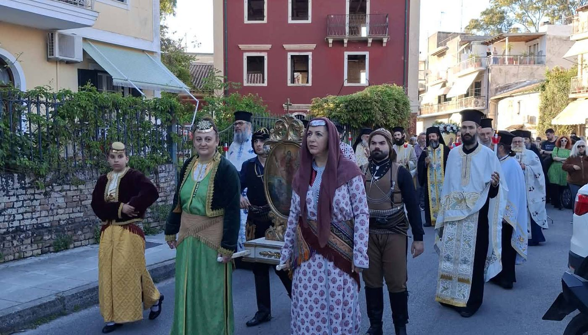
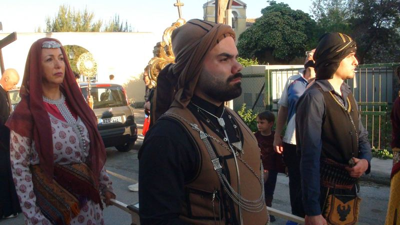
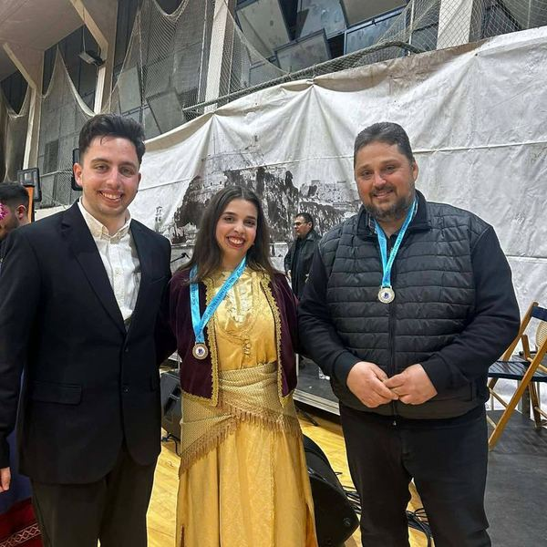
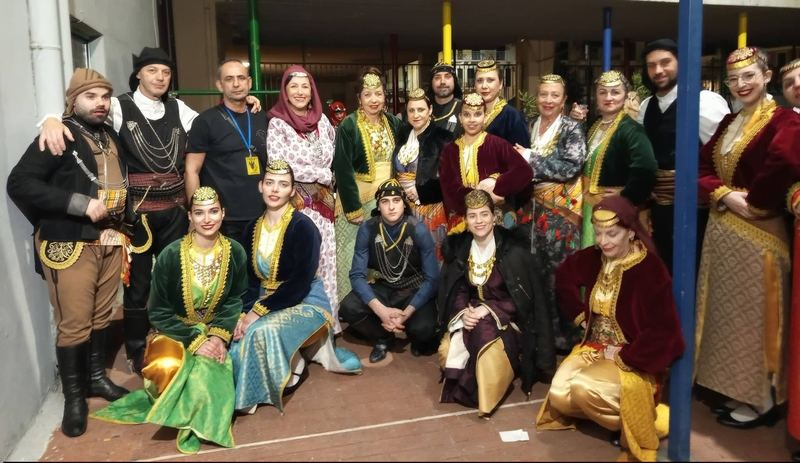

Ζωντανεύοντας την Ποντιακή Παράδοση από το 1997
Ο Σύλλογός μας
Η Εύξεινος Λέσχη Ποντίων Κέρκυρας ιδρύθηκε το 1997 από Πόντιους που βρήκαν δεύτερη πατρίδα στην Κέρκυρα, με σκοπό να διατηρήσουν ζωντανή την πολιτιστική κληρονομιά των προγόνων τους.
Μέσα από τα χρόνια, ο σύλλογος εξελίχθηκε σε έναν από τους πιο ενεργούς πολιτιστικούς φορείς του νησιού, με συμμετοχές σε εκδηλώσεις σε όλη την Ελλάδα.
Σήμερα αριθμεί περισσότερα από 150 μέλη όλων των ηλικιών που μοιράζονται το ίδιο πάθος για την ποντιακή παράδοση.
Πρόεδρος: Στέλλα Σοιλεμετζίδου · Γεωργάκη 28, Κέρκυρα
Διαφυλάσσουμε αυθεντικούς ποντιακούς χορούς, τραγούδια και ήθη που διαμορφώθηκαν σε αιώνες ιστορίας.
Παρουσιάζουμε τον ποντιακό πολιτισμό στο ευρύ κοινό μέσω εκδηλώσεων, παραστάσεων και συνεργασιών.
Διδάσκουμε στις νέες γενιές τις ρίζες και την κληρονομιά του Πόντου, ώστε να συνεχίσουν το έργο μας.
Μια περιοχή με τρεις χιλιετίες ελληνικής παρουσίας, μια παράδοση που ζει μέσα μας
Ο Πόντος, στις νότιες ακτές του Εύξεινου Πόντου, γνώρισε ελληνική παρουσία από τον 8ο αιώνα π.Χ. Η κορύφωση ήρθε με την Αυτοκρατορία της Τραπεζούντας (1204–1461).
Μετά τις ανταλλαγές πληθυσμών της δεκαετίας του 1920, οι Πόντιοι έφεραν μαζί τους ανεκτίμητο πολιτισμό στην Ελλάδα.
Η 19η Μαΐου ορίστηκε από το ελληνικό κράτος (ν. 2193/1994) ως Ημέρα Μνήμης της Γενοκτονίας των Ελλήνων του Πόντου.
Κάθε χρόνο ο σύλλογός μας τιμά αυτή την ημέρα με επιμνημόσυνες δεήσεις και πολιτιστικές εκδηλώσεις.
«Δεν ξεχνάμε — τιμάμε με κάθε βήμα του χορού μας.»
Οι ποντιακοί χοροί είναι από τους πιο δυναμικούς στον ελληνικό χώρο. Συνοδεύονται από την κεμεντζέ — την ποντιακή λύρα.
Τμήματα χορού, χορωδίας και ταούλ με έμπειρους δασκάλους ποντιακής παράδοσης
Εισαγωγή στον ποντιακό χορό. Ανοιχτό σε όλους, χωρίς προηγούμενη εμπειρία.
Για μέλη με εμπειρία στον ποντιακό χορό. Εμβάθυνση στην τεχνική και προετοιμασία παραστάσεων.
Ποντιακά τραγούδια και παραδοσιακή χορωδία. Ζωντανεύουμε τη μουσική κληρονομιά του Πόντου.
Εκμάθηση του παραδοσιακού ποντιακού τύμπανου. Το ταούλ στην καρδιά κάθε ποντιακής γιορτής.
Στιγμές από τις εκδηλώσεις και τις παραστάσεις μας


